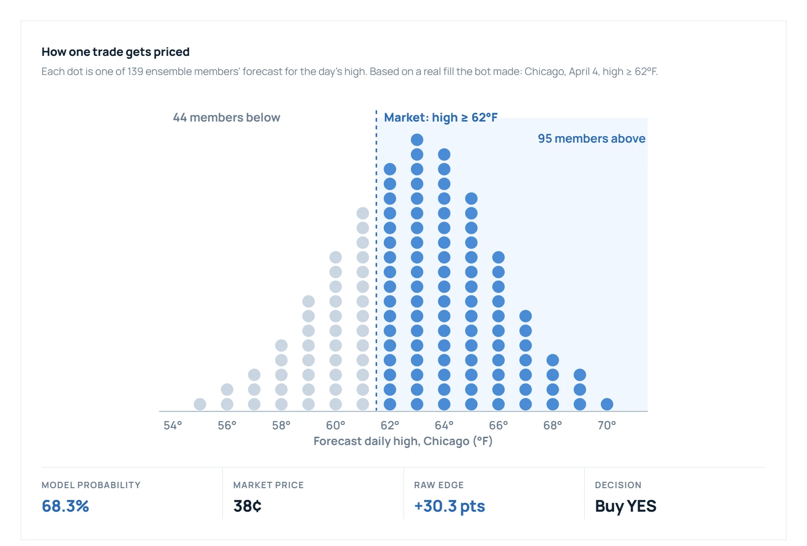
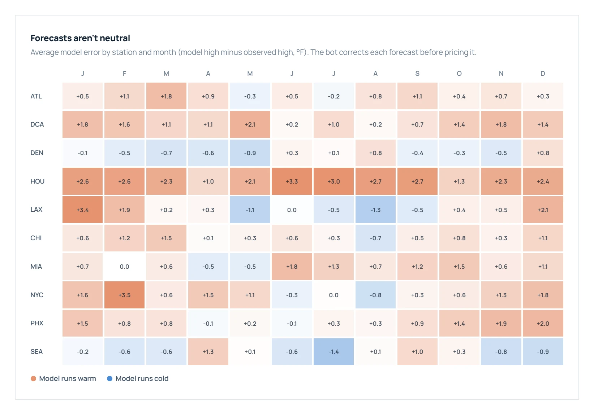

The bot turns 139 weather-model forecasts into a probability, compares that to the market's price, and trades only when the gap survives fees and a stack of risk checks. It covers daily highs in 10 cities, in about 7,300 lines of Python with 549 tests.
The idea
Kalshi lists contracts like "Will Chicago's high today be 62°F or above?" that trade between 1¢ and 99¢. The price is the crowd's probability. Weather agencies publish something the crowd mostly ignores: ensemble forecasts, where each model is run dozens of times with slightly different starting conditions.
Counting how many of those runs land above the threshold gives a direct, data-driven probability. When that number and the market disagree by enough, there's a trade.

How one trade gets priced, from a real fill the bot made. 95 of 139 members reach 62°F, so the model says 68%. The market charged 38¢. That gap, net of the fee and slippage, is the edge.
How it works
- Scan the markets. Pulls every open daily-high contract through Kalshi's API and filters out wide spreads and contracts too close to (or too far from) settlement. It polls faster around the 00Z and 12Z model runs, when new forecasts land.
- Pull 139 forecasts. Fetches the GFS (30), ECMWF (50), ICON (39), and GEM (20) ensembles from Open-Meteo for each settlement station. Trades are blocked if fewer than 30 members are available.
- Turn them into a probability. Counts the share of members above the threshold, applies a per-station, per-month bias correction, and grades confidence by how tightly the members agree.
- Find the edge. Subtracts Kalshi's taker fee and slippage from the probability-vs-price gap. It requires 4–10 points of edge depending on confidence, and the edge must clear 3× the fee. For unusually large edges, Claude does a sanity check before anything trades.
- Size and check risk. Quarter-Kelly sizing, then 12 independent risk checks: exposure caps, a daily loss stop, resting-order limits, and automatic halts if calibration (Brier score) starts to slip.
- Execute patiently. Posts maker limit orders at the bid instead of crossing the spread, cancels stale orders after 30 minutes, and syncs fills and settlements to a local database.

Forecasts aren't neutral. Houston forecasts run 2–3°F hot almost all year, and LA swings from +3.4°F in January to −1.3°F in August. On a 1°F threshold, that difference decides the trade, so the bot corrects each forecast before pricing it.
Running it live
The bot ran as a daemon on a VPS with real money and deliberately tiny limits (one contract per order, $15 max exposure, $3 daily loss stop). It evaluated and logged more than 6,100 signals. It also ran a two-arm experiment: a conservative arm placing real orders, and an exploratory arm with looser thresholds that only paper-traded, so I could compare strategies without paying to learn.
Most of the work after launch was the unglamorous part. Live trading surfaced stale orders, fill-sync gaps, and empty-book edge cases that never show up in a backtest. Each fix came with a test, which is how the suite grew to 549.
Skills applied
Python (async), probabilistic forecasting, ensemble weather models, Kelly criterion sizing, risk management, market microstructure, calibration and Brier scoring, API integration, the Claude API, pandas, NumPy, SciPy, pytest, and VPS deployment.